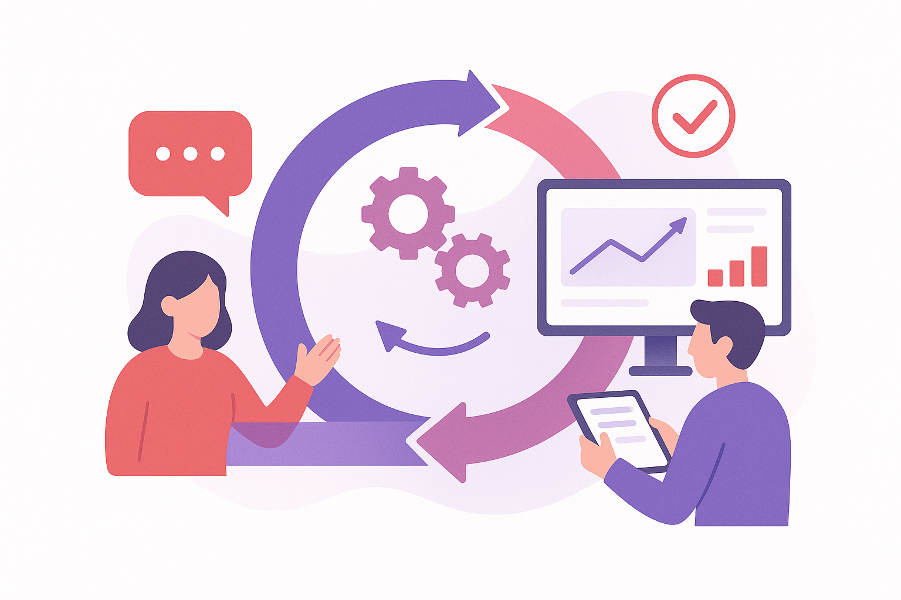

Diagnóstico Digital y Plan de acción
¿No sabes por dónde empezar? Nosotros analizamos tu empresa y te decimos qué procesos puedes mejorar, automatizar o digitalizar. Paso a paso, y adaptado a tu realidad.

Evaluación de negocio y Mapa de oportunidades
Analizamos tu empresa y te ofrecemos varias opciones de digitalizacion
Servicio de diagnóstico en el que analizamos cómo funciona tu empresa hoy (procesos, herramientas, tareas repetitivas, uso de datos...) y te entregamos un informe práctico con oportunidades concretas de mejora, usando tecnologías actuales y en la nube.
Visión clara y realista, sin palabras técnicas. Aclara qué hacer primero y cuánto puede costar. Identifica tareas que te hacen perder tiempo y afectan a tus ganancias.
Formaciones de digitalización para tu empresa
Capacita a tu equipo con herramientas digitales que realmente marcan la diferencia
Ofrecemos formaciones prácticas y accesibles en Microsoft 365, Power Apps, Power BI y uso de inteligencia artificial aplicada a pequeñas y medianas empresas. Tus empleados aprenderán a utilizar estas herramientas para ser más eficientes, ahorrar tiempo y tomar mejores decisiones. Nos enfocamos en ejemplos reales y necesidades concretas de tu empresa, sin tecnicismos innecesarios.
Capacita al equipo sin depender de expertos externos. Mejora la productividad y reduce errores.

Servicio de Soporte y Mejora Continua
Te acompañamos después de la implementación, para que saques el máximo provecho a tu solución
Te guiamos para que aproveches todas las funcionalidades de la herramienta implementada, resolvemos tus dudas y ofrecemos soporte sobre su funcionamiento. Porque implementar una solución es solo el primer paso: lo importante es que realmente funcione para ti.
Estamos para ayudarte a crecer con lo que ya has construido.